Как связать ВКонтакте и Power BI, R пакет rvkstat.
Несмотря на недавнюю блокировку соцсети в Индии, ВКонтакте продолжает оставаться огромным источником полезной информации и статистики. В этой статье я расскажу, как с помощью написанного мной программного пакета rvkstat и коннектора R получить данные из API ВКонтакте в Microsoft Power BI.
Как использовать прокси в скриптах R: обходим блокировку API Яндекса, Mail.ru и ВКонтакте
Причем получить эти данные можно даже в странах, где сама соцсеть официально заблокирована.
Установка необходимого программного обеспечения
Скачайте и установите актуальную версию языка R и Power BI. Это, пожалуй, самая простая часть работы, как R так и Power BI при установке не требуют от вас никаких дополнительных манипуляций и настройки — просто кликайте по кнопкам Next и Ok.
Как создать Standalone-приложение ВКонтакте
Для работы с API Вконтакте необходимо создать Standalone-приложение, непосредственно в интерфейсе социальной сети.
Для создания приложения перейдите по этой ссылке и выберите Standalone-приложение.

Перейдите в настройки только что созданного приложения и заполните следующие поля следующим образом:
Адрес сайта: https://selesnow.github.io/rvkstat/getCode/get_code.html
Базовый домен: selesnow.github.io
Доверенные redirect URI: https://selesnow.github.io/rvkstat/getCode/get_code.html
https://selesnow.github.io/rvkstat/getCode/get_token.html
Далее для получения токена разработчика вам понадобится ID и засекреченный ключ приложения.
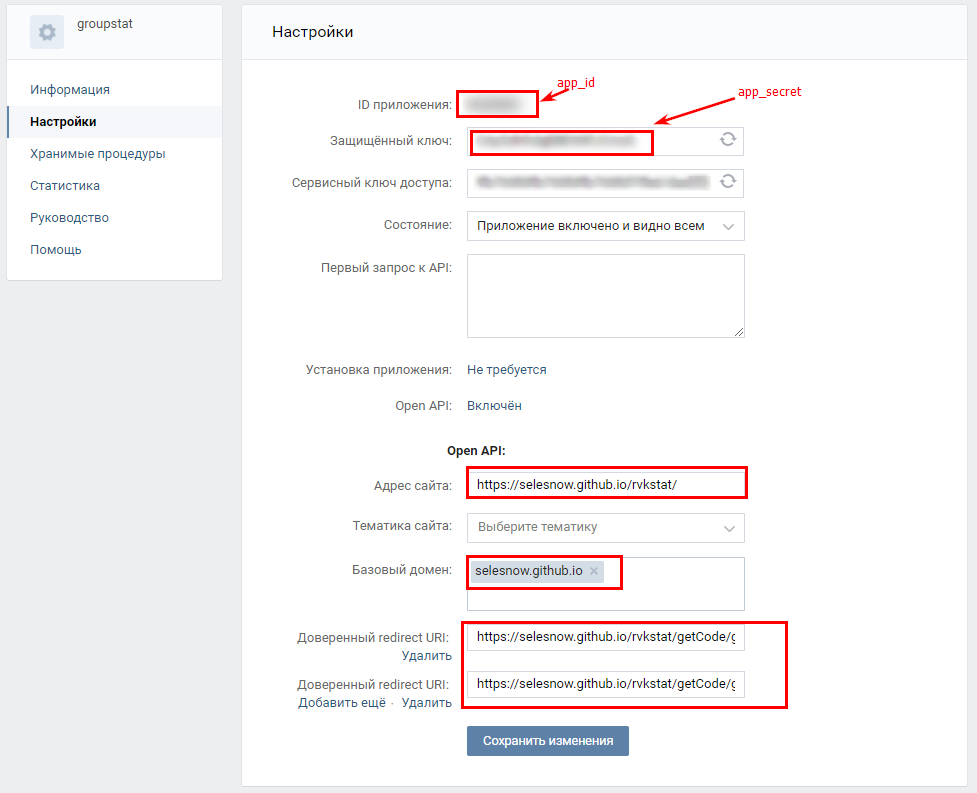
Устанавливаем пакет rvkstat
Пакет rvkstat является R-клиентом для работы с API ВКонтакте. Его можно установить из моего репозитория на GitHub с помощью приведенного ниже кода в R.
if(!"devtools" %in% installed.packages()[,1]){install.packages("devtools")}
devtools::install_github('selesnow/rvkstat')
Если на данном этапе вы всё сделали правильно, в R-консоли увидите сообщение о том, что пакет rvkstat успешно установлен:
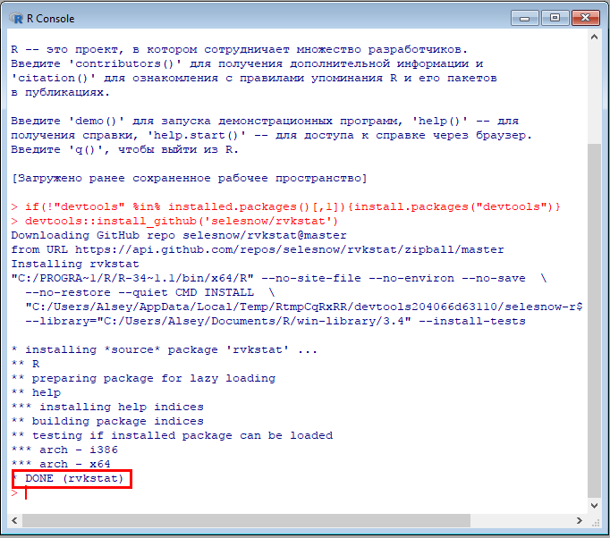
Получаем токен разработчика
Следующий шаг — получение токена доступа к API ВКонтакте. Для этого необходимо подключить пакет rvkstat и с помощью функции vkAuth получить токен разработчика.
Для этого вставьте в R-консоль следующий код:
myCredential <- vkAuth(app_id = <ID Вашего Приложения>, app_secret = <Защищённый Ключ Вашего Приложения>)
После запуска функции откроется окно браузера, в котором необходимо предоставить приложению все необходимые для работы разрешения:
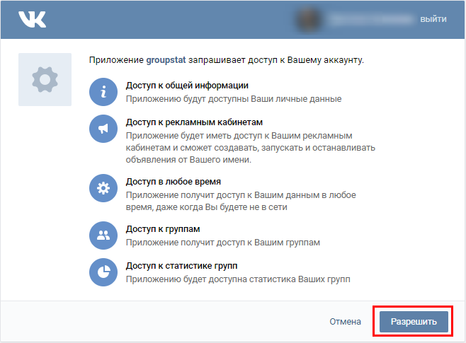
Затем откроется окно браузера, в котором будет ваш код доступа. Вам необходимо скопировать его и вставить в R-консоль в ответ на запрос «Enter code from URL:».
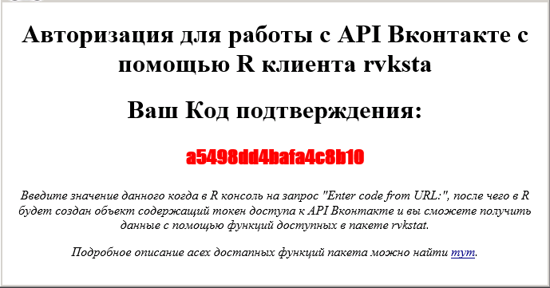
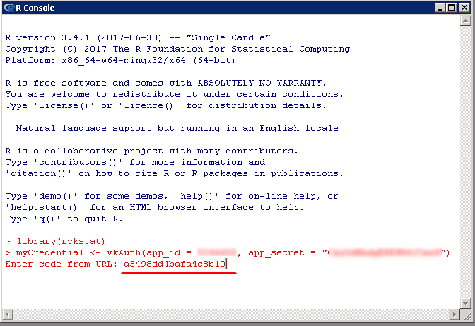
После этого в вашем рабочем окружении будет создан объект myCredential, именно в нём теперь хранится токен доступа к API.
Посмотреть его можно с помощью кода:
myCredential$access_token
Для удобства скопируйте из консоли полученный токен в блокнот.
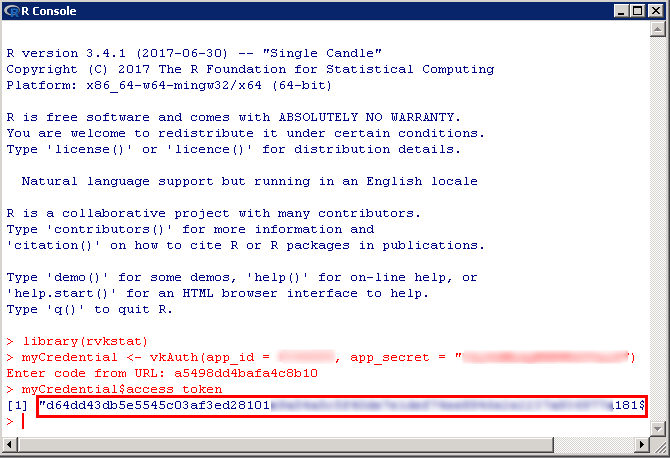
Как получить данные из рекламного кабинета ВКонтакте в Power BI
На этом шаге можно смело закрывать R-консоль и открывать Power BI. Для загрузки данных жмите на «Get Data».
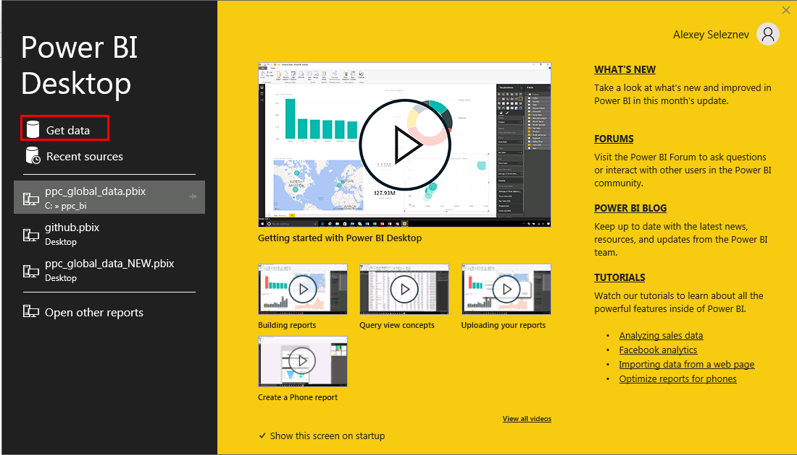
В открывшемся диалоговом окне переходим в группу коннекторов «Other», выбирайте «R script» и нажимайте «Connect».
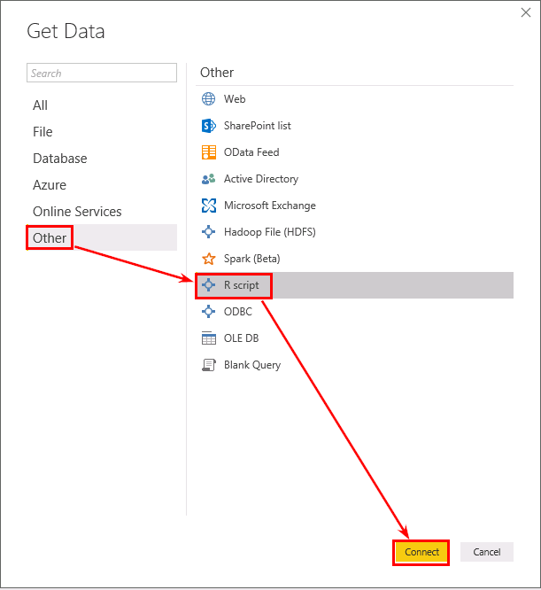
Далее в диалоговое окно «R Script» вставьте R-код, подставив в аргументы функций свои значения.
#Подключаем пакет
library(rvkstat)
##Получаем список рекламных кампаний
camp <- vkGetAdCampaigns(account_id = <id вашего рекламного кабинета>,
access_token = <токен разработчика, полученный на прошлом шаге>)
##Получаем статистику по рекламным кампаниям по дням
vk_stat_by_campaign <- vkGetAdStatistics(account_id = <id вашего рекламного кабинета>,
ids_type = "campaign",
ids = camp$id ,
period = "day",
date_from = "2010-01-01",
date_to =Sys.Date(),
access_token = <токен разработчика, полученный на прошлом шаге>)
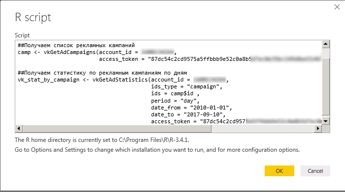
Если вы верно указали значения для всех аргументов функций, откроется диалоговое окно «Navigator», в котором можно выбрать две таблицы:
- camp — справочник рекламных кампаний;
- vk_stat_by_camp — статистика по рекламным кампаниям.
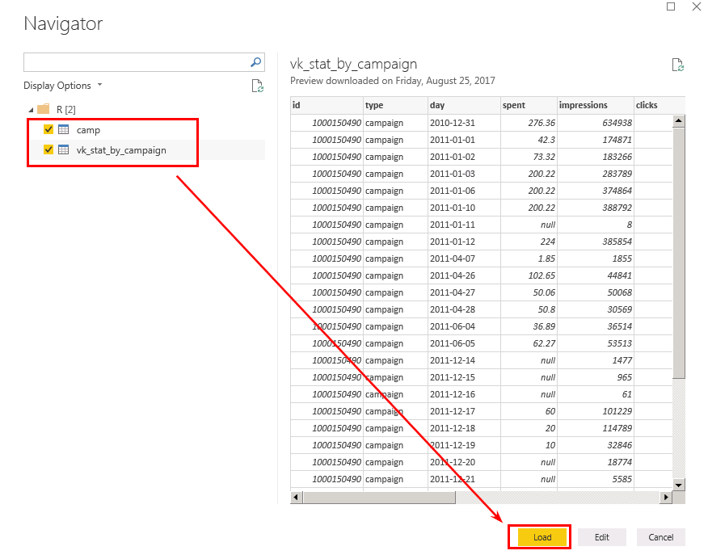
После этого в Power BI будут загружены обе таблицы, и между таблицами будет установлена связь camp.id = vk_stat_by_camp.id.
Чтобы получить статистику в разрезе рекламных объявлений, необходимо в аргументе ids_type указать значение «ad» и в аргумент ids передать номера объявлений.
Например, можете воспользоваться следующим кодом:
##Подключаем пакет
library(rvkstat)
## Получаем список рекламных кампаний
ads <- vkGetAds(account_id = account_id, access_token = my_tok$access_token)
## Получаем статистику по объявлениям
vk_stat_by_ads <- vkGetAdStatistics(account_id = 1,
ids_type = "ad",
ids = ads$id ,
period = "month",
date_from = "2010-01-01",
date_to =Sys.Date(),
access_token = <токен разработчика полученный на прошлом шаге>))
Для загрузки общей статистики по рекламному кабинету необходимо передать в аргумент ids_type значение «office», а в аргумент ids передать номер рекламного кабинета.
По указанному выше примеру можно получить и другую статистику из рекламного кабинета и сообществ ВКонтакте.
Ловите список доступных функций для загрузки статистики из рекламного кабинета:
- vkGetAdCategories — возможные тематики рекламных объявлений и их категорий;
- vkGetAdAccounts — список доступных рекламных кабинетов;
- vkGetAdClients — список клиентов из агентского аккаунта;
- vkGetAds — список объявлений;
- vkGetAdCampaigns — список рекламных кампаний;
- vkGetAdStatistics — статистика показателей эффективности по рекламным объявлениям, кампаниям, клиентам или всему кабинету;
- vkGetAdCityStats — статистика охвата аудитории по рекламным кампаниям или объявления в разрезе городов;
- vkGetAdGenderStats — статистика охвата аудитории по рекламным кампаниям или объявления в разрезе пола;
- vkGetAdAgeStats — статистика охвата аудитории по рекламным кампаниям или объявлениям в разрезе возраста;
- vkGetAdGenderAgeStats — статистика охвата аудитории по рекламным кампаниям или объявлениям в разрезе пола и возраста;
- vkGetAdBudget — остаток средств из рекламного кабинета;
- vkGetAdPostsReach — подробная статистика по охвату рекламных записей из объявлений и кампаний для продвижения записей сообщества.
Подробную справку с примерами кода и полным описанием полей, которые будут загружены в результате работы функции в пакете rvkstat, можно получить с помощью команды help в R-консоли:
help("vkGetAdStatistics")
Полный список функций можно получить с помощью команды help(package = “rvkstat”), либо перейдя в ReadMe репозитория пакета по ссылке.
Как построить визуализацию в Power BI
После загрузки данных в Power BI будет создано две таблицы:
- camp — справочник рекламных кампаний;
- vk_stat_by_campaign — статистика по рекламным кампаниям.
Между кампаниями будет автоматически создана связь по полям id.
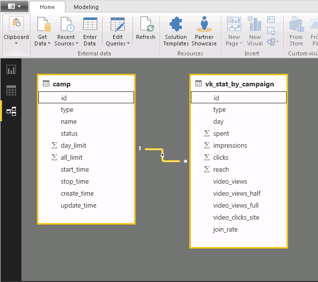
Остаётся только построить нужные графики и таблицы.
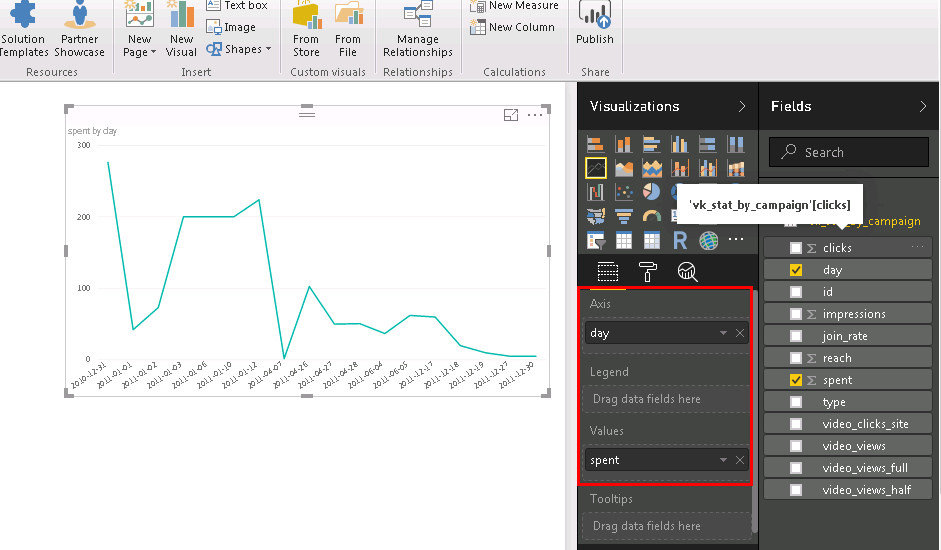
Выводы
ВКонтакте — одна из самых популярных социальных сетей в СНГ, а Power BI одна из самых популярных в мире BI-платформ. Связав эти инструменты, вы легко построите удобные дашборды и проанализируете свои рекламные кампании и объявления.
Что для этого нужно:
- Скачать и установить актуальную версию языка R.
- Скачать и установить актуальную версию Microsoft Power BI.
- Создать Standalone-приложение ВКонтакте.
- Установить пакет rvkstat.
- Получить токен для доступа к API ВКонтакте.
- С помощью функций доступных в пакете rvkstat написать код для загрузки данных в Power BI.
- Построить удобный и информативный dashboard.